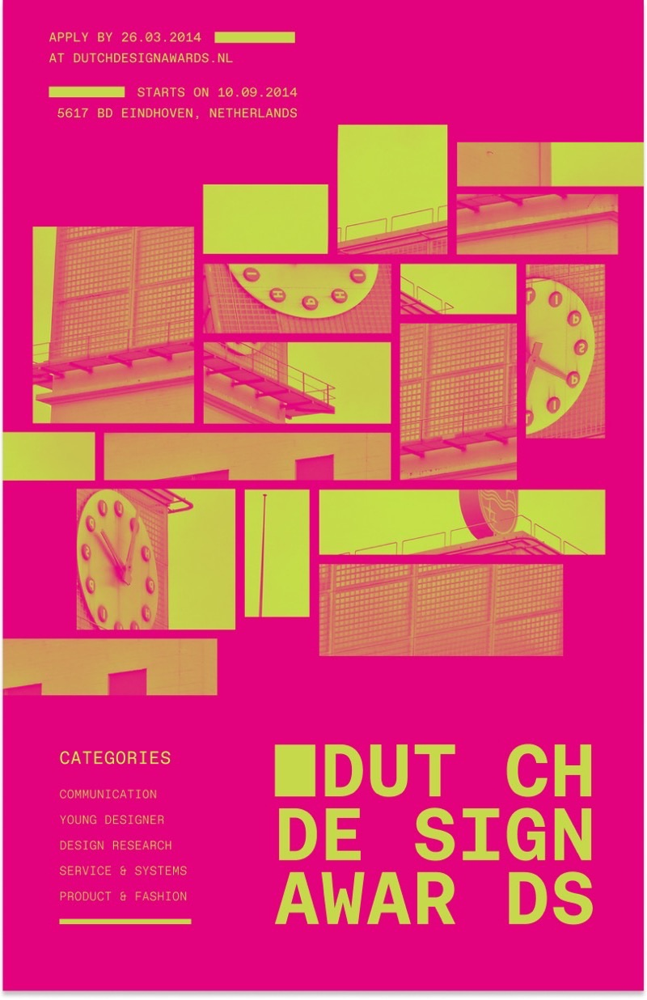
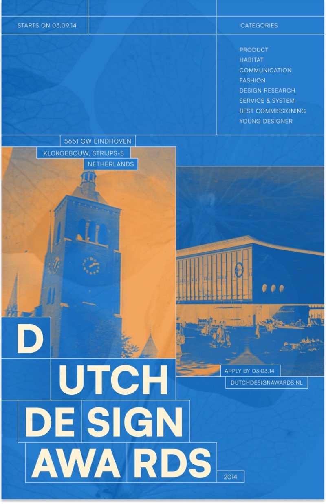
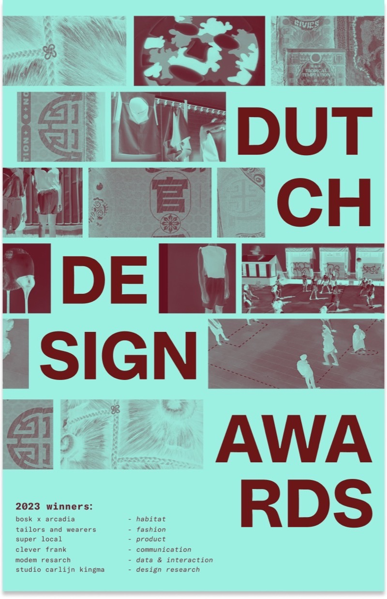
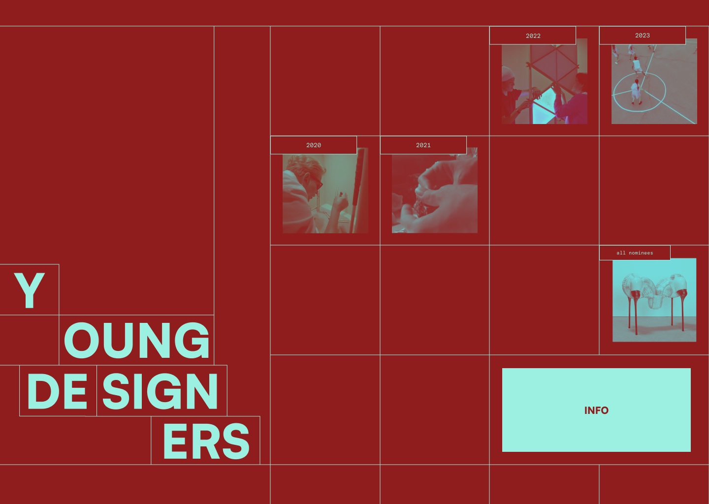
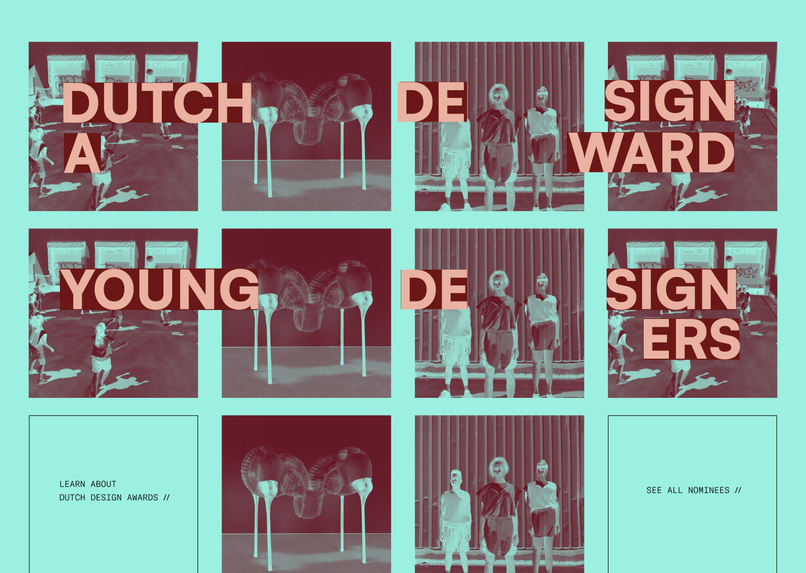

Giving young designers the main stage.
Dutch Design Awards
A poster series and event microsite that spotlights the Young Designers category at the Dutch Design Awards.
Eight categories,
one overlooked.
The Dutch Design Awards span eight categories. Young Designers is different: nominees submit a whole portfolio, the category comes with a grant, and it’s often overlooked.
We designed a microsite for the nine-day event that pairs the schedule with the young nominees.

Posters first,
then the web.
We built the visual system on posters first, exploring three directions from Ellen Lupton’s design principles. Early rounds were too literal; the final three balanced image, type and space.

Image as figure-ground
One photo cropped and repeated at different sizes forms a new shape on the page.

Visible grids
Grid lines divide the page into sections and stitch clusters back together.

A pattern, broken
Fragments form a pattern, and the headline sits exactly where it breaks.
Homepage · early exploration to the final square grid
A functional grid,
not an expressive one.
We tried an expressive layout against a functional one. The functional grid matched the posters and gave us a clearer direction, so the whole site runs on it.


Key interactions
Image on hover
On the all-nominees list, hovering a row previews that designer’s work beside it.
Years that preview
Hovering a year enlarges it and plays a clip from each nominee before you commit.
Three posters,
one working site.
Every page carries the poster system: a homepage, nominees by year, every past nominee, the nine-day schedule and the category’s history.
Microsite walkthrough
What I owned
Research
- Client research on the Dutch Design Awards and its categories
- Exhibition research into the nine-day Dutch Design Week event
Posters
- Poster explorations across the lines of investigation
Microsite
- Microsite screens in the functional grid system
Looking back
A decision I pushed for
I designed the microsite screens in the functional grid. We tried an expressive layout too, but the functional one matched the posters and gave the site a clearer direction, so every page runs on it.
What I’d do next
Test the site with people planning a Dutch Design Week visit, especially whether the poster grid still reads on a phone. Our posters started too literal and too conceptual; a round of outside feedback earlier would have got us to the final three sooner.